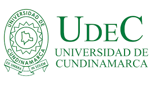

Bienvenidos: Este es un glosario academico diseñado para compartir los terminos encontrados en las diferentes asignaturas de primer semestre de ingenieria mecatronica
Diseñadores: Leiner Riaño Y Daniel Castro
Inicio
Glosario Ingeniería
Glosario TGS
Glosario Algoritmos